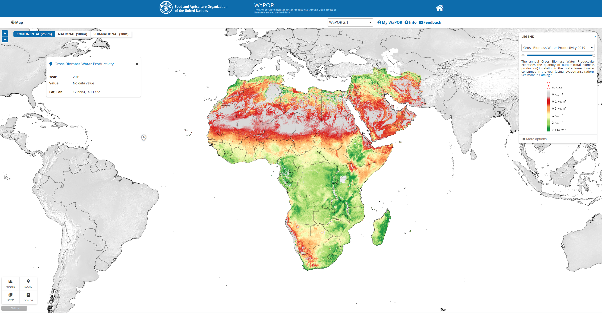
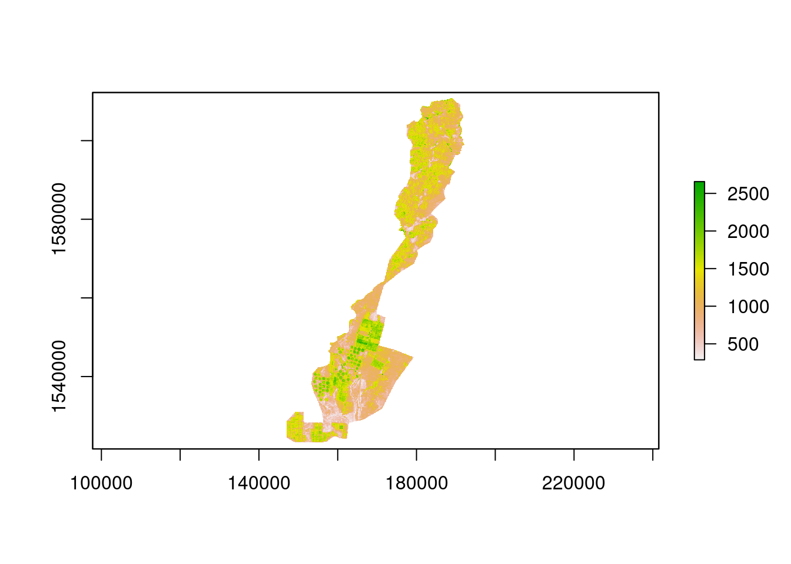

if(!"wapoR" %in% installed.packages()[,1]){
remotes::install_github("goergen95/wapoR")
}
library(wapoR)R API to download FAO’s WaPOR datasets
R
raster
FAO WAPOR
API
A R API package to query and download FAO’s WaPOR raster datasets.

Screenshot of from the WaPOR website
What is it about?
The WaPOR project by FAO offers some awesome remote sensing products concerned with water usage in agriculture on the African continent. A great variety of different products, among them net- and gross-biomass-water-productivity, evaporation, transpiration, and interception as well as biomass production, are provided at a spatial resolution ranging between 250 meters up-to 30 meters for selected agricultural regions.
There are already some Python packages out there that allow users to programmatically access the WaPOR data portal such as hkvwaporpy or IHEWAwapor. However, I was not able to find similar functionality for R users. So I just went on and wrote an experimental package in R, which can be used to download raster data.
What can it do?
To install and use the package, you should utilize remotes functionality.
From there, it is quite straightforward to query available collections. Note that there are other collections available for which, in principal, it should be possible to download the data in the same way. But this package was primarily intended to interact with the WaPOR collections.
cols = wapor_collections()
cols[rev(seq(1,nrow(cols),)),c(1:2)] code
28 WPOP
27 WATER
26 WAPOR_2
25 RVF
24 RSCROP
23 RICCAR_2
22 RICCAR
21 RDMS
20 NMME
19 NATURAL_EARTH
18 NASA
17 GLW4
16 GLW3
15 GLW
14 GLEAM3
13 GISMGR_TEST
12 GAEZ_V4
11 GAEZ_2015
10 FROM_GLC
9 FAOSTAT
8 DLMF
7 CRTB
6 CROPWATCH
5 CHIRPS
4 C3S
3 C2ATLAS
2 ASIS
1 AQUAMAPS
caption
28 WorldPop project
27 Water Data
26 FAO Water Productivity Open-access portal (WaPOR)
25 Rift Valley Fever
24 Crop Pest and Disease Monitoring and Forecasting System
23 Regional Arab Climate Change Assessment Report
22 Regional Arab Climate Change Assessment Report
21 Regional Drought Monitoring System
20 North American Multi-Model Ensemble (NMME)
19 Natural Earth
18 National Aeronautics and Space Administration (NASA)
17 Gridded Livestock of the World (GLW4, 2015)
16 Gridded Livestock of the World (GLW3, 2010)
15 Gridded Livestock of the World
14 Global Livestock Environmental Assessment Model (GLEAM3)
13 FAO GIS MANAGER (GISMGR) - Test and training workspace
12 Global Agro-Ecological Zones (2021)
11 Global Agro-Ecological Zones (2015)
10 Finer Resolution Observation and Monitoring of Global Land Cover (FROM-GLC)
9 FAO Corporate Statistical Database
8 Desert Locust Monitoring and Forecasting
7 Climate Risk Toolbox (CRTB)
6 CropWatch
5 Climate Hazard group InfraRed Precipitation with Stations (CHIRPS)
4 Copernicus Climate Change Service
3 Climate Change ATLAS
2 Agriculture Stress Index System
1 Global spatial database on water and agricultureI reversed the order of the collections vector so that you can see that there are two available WaPOR collections representing version 1 and 2, respectively. I would advise using the updated version 2 if you do not have other reasons to use the first version.
We can query the available products within a collection by using wapor_products together with the collection we wish to query.
prods = wapor_products(collection = "WAPOR_2")
print(paste0("In total there are ", length(prods), " available products in the WAPOR_2 collection."))[1] "In total there are 285 available products in the WAPOR_2 collection."str(prods[1])List of 1
$ L1_GBWP_A:List of 2
..$ product:'data.frame': 1 obs. of 3 variables:
.. ..$ code : chr "L1_GBWP_A"
.. ..$ caption : chr "Gross Biomass Water Productivity"
.. ..$ description: chr "The annual Gross Biomass Water Productivity expresses the quantity of output (total biomass production) in rela"| __truncated__
..$ meta :'data.frame': 1 obs. of 12 variables:
.. ..$ format : chr "Raster Dataset"
.. ..$ unit : chr "kg/m³ is the ratio of kg of dry matter per cubic meter of water transpired by vegetation in one hectare"
.. ..$ dataType : chr "Int32 (32bit Integer)"
.. ..$ conversionFactor : chr "the pixel value in the downloaded data must be multiplied by 0.001"
.. ..$ noDataValue : int -9999
.. ..$ spatialResolution : chr "250m (0.00223 degree)"
.. ..$ spatialExtent : chr "Africa and Near East"
.. ..$ spatialReferenceSystem: chr "EPSG:4326 - WGS84 - Geographic Coordinate System (lat/long)"
.. ..$ temporalResolution : chr "from January 2009 to present"
.. ..$ temporalExtent : chr "Annual"
.. ..$ nearRealTime : chr "New dekadal data layers are released approximately 5 days after the end of a dekad. A higher quality version of"| __truncated__
.. ..$ methodology : chr "The calculation of gross biomass water productivity (GBWP) is as follows: GBWP = TBP/ETIa Where TBP is annual T"| __truncated__names(prods)[1:10] [1] "L1_GBWP_A" "L1_NBWP_A" "L1_AETI_A" "L1_AETI_M" "L1_AETI_D" "L1_T_A"
[7] "L1_E_A" "L1_I_A" "L1_T_D" "L1_E_D" The total number of products is relatively high. The product names consist first of the level a respective product belongs to. Level 1 means this product belongs to the continental products covering the African continent at a spatial resolution of about 250 meters. Level 2 products show a resolution of 100 meters. However, they are only available for selected countries. Finally, level 3 data is available for only a few specific agricultural regions, but the spatial resolution is about 30 meters.
The second component in the product name specifies the variable. For example, GBWP stands for Gross Biomass Water Productivity or AETI for Actual Evapotranspiraton and Interception. You can check out the WaPOR catalog to see all available products, or you search through the product list as some metadata is also included in the above object.
The last component of a product name specifies its temporal resolution, where A stands for annual, M for monthly, D for decadal, and S for a seasonal temporal resolution.
Let’s assume we decided to download some level 3 data for the Office du Niger agricultural region. First, let’s take a look at the available products:
names(prods)[grep("L3_ODN", names(prods))] [1] "L3_ODN_GBWP_S" "L3_ODN_NBWP_S" "L3_ODN_AETI_A"
[4] "L3_ODN_AETI_M" "L3_ODN_AETI_D" "L3_ODN_T_A"
[7] "L3_ODN_E_A" "L3_ODN_I_A" "L3_ODN_T_D"
[10] "L3_ODN_E_D" "L3_ODN_I_D" "L3_ODN_NPP_M"
[13] "L3_ODN_NPP_D" "L3_ODN_TBP_S" "L3_ODN_LCC_D"
[16] "L3_ODN_PHE_S" "L3_ODN_QUAL_LCC_S" "L3_ODN_QUAL_NDVI_D"
[19] "L3_ODN_QUAL_NDVI_LT"For the sake of a quick example, let’s say we are interested in the actual evapotranspiration and interception for the year 2018. We can query some additional metadata about this product with the following command:
meta = wapor_metadata(collection = "WAPOR_2", product = "L3_ODN_AETI_A")
str(meta)List of 3
$ info :'data.frame': 1 obs. of 5 variables:
..$ code : chr "WATER_MM"
..$ caption : chr "Amount of Water"
..$ unit : chr "mm"
..$ scale : int 3
..$ multiplier: num 0.1
$ dimensions:'data.frame': 1 obs. of 3 variables:
..$ code : chr "YEAR"
..$ caption: chr "Year"
..$ type : chr "TIME"
$ meta :'data.frame': 1 obs. of 12 variables:
..$ format : chr "Raster Dataset"
..$ unit : chr "mm"
..$ dataType : chr "Int32 (32bit Integer)"
..$ conversionFactor : chr "the pixel value in the downloaded data must be multiplied by 0.1"
..$ noDataValue : int -9999
..$ spatialResolution : chr "30m"
..$ spatialExtent : chr "Office du Niger, Mali"
..$ spatialReferenceSystem: chr "EPSG:32630 - WGS 84 / UTM zone 30N"
..$ temporalResolution : chr "from January 2009 to present"
..$ temporalExtent : chr "Annual"
..$ nearRealTime : chr "New dekadal data layers are released approximately 5 days after the end of a dekad. A higher quality version of"| __truncated__
..$ methodology : chr "See ETIa by dekad for further information. The annual total is obtained by taking the ETIa in mm/day, multiplyi"| __truncated__From the above, we already get a lot of useful information. For example, we see that the product is available between 2009 and the current year and is provided in a projected coordinate reference system. We also can see that the unit of the pixel values is in millimeters bit that the pixel value shall be multiplied with a scale factor of 0.1. This is essential information, and it should be checked for all WaPOR products since most of them were rescaled to reduce file size.
Maybe the most important aspect of the above output for the next step, is the dimensions dataframe. Here we can see that the selected product only shows one dimension called “YEAR” which type is time. Other products might have further dimensions, such as “SEASON” which needs different specification in the download call.
wapor_queryRaster(collection = "WAPOR_2",
product = "L3_ODN_AETI_A",
begin = "2018-01-01", # begin date is inclusive
end = "2019-01-01", # end date is exclusive
outdir = ".",
APIkey = Sys.getenv("WAPOR-KEY")) Let’s take a glimpse at the data we just downloaded.
library(raster)Loading required package: spfile = list.files(".", "L3_ODN", full.names = T)
r = raster(file) * 0.1
plot(r)
We very quickly downloaded some important data for an assessment of agricultural practices in ODN. This package’s download functionality can be used to download specific regions from Level 2 or 3 datasets by providing an sf object of an area of interest. Additionally, complete-time series can be downloaded by adapting the start and end date. Check out the README of the package for another example to download some data and leave an issue if you face any problems using this package.